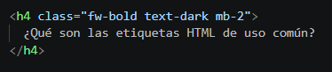
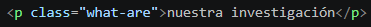
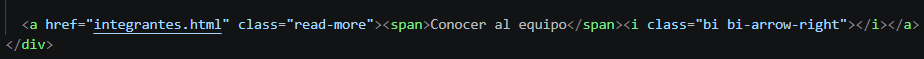
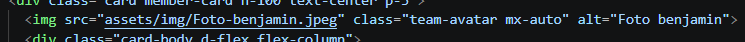
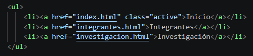
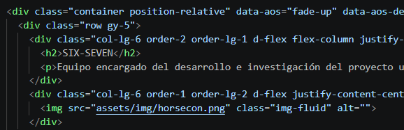
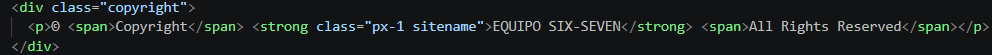
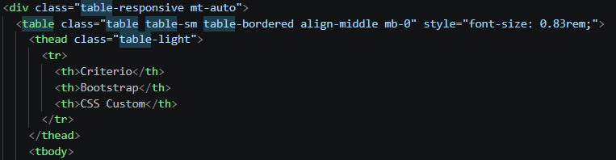

HTML
Etiquetas HTML de uso común
¿Qué son las etiquetas HTML de uso común?
Las etiquetas HTML de uso común son elementos que se utilizan frecuentemente para estructurar y presentar el contenido de una página web. Entre ellas encontramos etiquetas para crear títulos, párrafos, enlaces, imágenes, listas y otros elementos que forman parte de la estructura habitual de un documento HTML.
<h1> a <h6>
Las etiquetas <h1> a <h6> se utilizan para crear títulos y subtítulos dentro de una página HTML. <h1> representa el nivel principal de encabezado, mientras que los niveles siguientes permiten organizar jerárquicamente el contenido.
¿Cómo utilizamos <h1> a <h6> en SIX-SEVEN?
En nuestro sitio web utilizamos diferentes niveles de encabezados para organizar la información. Por ejemplo, utilizamos títulos principales para identificar las secciones y encabezados secundarios para presentar contenidos específicos dentro de ellas.

<p>
La etiqueta <p> se utiliza para definir un párrafo de texto. Permite separar y organizar bloques de información dentro de una página HTML, facilitando la lectura y comprensión del contenido.
¿Cómo utilizamos <p> en SIX-SEVEN?
En nuestro sitio web utilizamos <p> constantemente para presentar explicaciones, descripciones y otros textos. En esta misma investigación, por ejemplo, cada explicación de una etiqueta está organizada mediante párrafos.

<a>
La etiqueta <a> se utiliza para crear enlaces o hipervínculos. Mediante el atributo <href> se puede indicar el destino al que el usuario será dirigido al seleccionar el enlace.
¿Cómo utilizamos <a> en SIX-SEVEN?
En nuestro sitio web utilizamos <a> principalmente para la navegación entre nuestras páginas. Por ejemplo, el menú superior contiene enlaces que permiten acceder a Inicio, Integrantes e Investigación. También utilizamos esta etiqueta en las tarjetas del índice para dirigir al usuario hacia cada investigación.

<img>
La etiqueta <img> se utiliza para insertar imágenes dentro de una página HTML. Generalmente utiliza el atributo <src> para indicar la ubicación de la imagen y <alt> para proporcionar un texto alternativo.
¿Cómo utilizamos <img> en SIX-SEVEN?
En nuestro sitio web utilizamos <img> para mostrar el logotipo del equipo, imágenes relacionadas con nuestras investigaciones y otros recursos visuales. Las imágenes se encuentran almacenadas dentro de nuestras carpetas de recursos del proyecto.

<ul>, <ol> y <li>
Las etiquetas <ul> y <ol> se utilizan para crear listas. <ul> representa una lista sin orden específico, mientras que <ol> representa una lista ordenada. La etiqueta <li> se utiliza para representar cada elemento individual dentro de una lista.
¿Cómo utilizamos las listas en SIX-SEVEN?
En nuestro sitio web utilizamos listas para organizar información que contiene varios elementos relacionados. Además, nuestra barra de navegación utiliza elementos de lista <li> para organizar los diferentes enlaces del menú.

<div>
La etiqueta <div> se utiliza como un contenedor genérico para agrupar otros elementos HTML. Por sí misma no representa un significado específico, pero resulta muy útil para organizar la estructura y aplicar estilos mediante CSS.
¿Cómo utilizamos <div> en SIX-SEVEN?
En nuestro sitio web utilizamos <div> para agrupar diferentes elementos y facilitar la organización de nuestras páginas. También forma parte de la estructura utilizada por Bootstrap para distribuir y organizar los contenidos.

<span>
La etiqueta <span> es un contenedor genérico utilizado para agrupar o identificar una parte específica de un texto u otro contenido en línea. Es especialmente útil cuando se necesita aplicar estilos particulares mediante CSS.
¿Cómo utilizamos <span> en SIX-SEVEN?
En nuestro proyecto podemos utilizar <span> para aplicar estilos específicos a determinadas partes de un texto sin afectar al resto del contenido que lo rodea.

<table>
La etiqueta <table> se utiliza para crear tablas en HTML, permitiendo organizar información en filas y columnas. Para construir una tabla se suele complementar con elementos como <tr> para las filas, <th> para los encabezados y <td> para las celdas que contienen los datos.
¿Cómo utilizamos <table> en SIX-SEVEN?
En nuestro sitio web utilizamos la etiqueta <table> en la página de Bootstrap para presentar una comparación entre Bootstrap y CSS personalizado. La tabla organiza la información en filas y columnas, permitiendo comparar aspectos como la velocidad, la responsividad y el control visual de ambas alternativas.

<form>
La etiqueta <form> se utiliza para crear formularios dentro de una página web. Permite agrupar diferentes controles para que el usuario pueda introducir información y posteriormente enviarla o procesarla.
<label> y <input>
La etiqueta <label> se utiliza para identificar y describir un control de un formulario, mientras que <input> permite crear diferentes tipos de campos donde el usuario puede introducir información. Ambas etiquetas suelen utilizarse juntas para mejorar la organización y comprensión de los formularios.
<button>
La etiqueta <button> se utiliza para crear botones interactivos dentro de una página web. Puede utilizarse para ejecutar acciones, interactuar con JavaScript o enviar información cuando forma parte de un formulario.